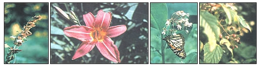
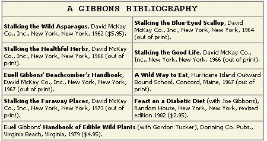
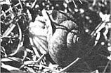

Euell's Country
In the 20 years that have passed since the publication of Stalking the Wild Asparagus, Euell Gibbon's writings have introduced foraging, as well as environmentalism, to millions.
September/October 1982
In the 20 years that have passed since the publication of Stalking the Wild Asparagus, Euell Gibbons' writings have introduced foraging - as well as environmentalism - to millions.
by Guy Graybill
Back in 1878, Ralph Waldo Emerson posed the question, "What is a weed?" . . . and then went on to define the word as "a plant whose virtues have not yet been discovered". Well, given that definition, it can be argued that Euell Theophilus Gibbons was a great eradicator of weeds . . since, through his publications, many of us discovered that plant species we'd once considered useless pests are actually valuable wild foods.
And since every environmentalist is influenced by his or her particular environment (and make no mistake about it, foraging, like gardening, is an activity that almost demands an increase in one's ecological awareness), one might well wonder just what sort of terrain helped trigger Euell's creative energy. The answer isn't a simple one. You see, for much of his life Gibbons was cursed (or blessed) with wanderlust.
He was born in Texas in 1911, and didn't settle down in his rural Snyder County, Pennsylvania home (shown in the accompanying photo) until 1963. During the years between, he lived - as a hobo, beachcomber, teacher, surveyor, cottonpicker, boat-builder, and more - in the Philadelphia area, Washington state, Indiana, California, New Mexico, Maine, Hawaii, and the South Seas. It was while residing in Snyder County, though, that he was able to pull together his years of experience in the volumes that followed Stalking the Wild Asparagus.
Interestingly enough, Euell and Freda (his second wife, whom he met in 1948 and married soon thereafter) spent eight years in making that final move to a permanent residence. It was Freda who "found" the land . . . in a magazine ad for country property. She remembers that she "woke up in the middle of the night when it became clear to me that we should try to buy it". After overcoming Euell's initial lack of enthusiasm, she mailed in a $50 down payment, and the couple began to make plans to visit the property sometime . . . to see just what they were buying!
The actual move, however, was delayed. It was in the period between that down payment and their 1963 relocation to the 13-acre Pennsylvania homestead (which cost a total of $5,000) that Freda urged Euell to work full time on his writing. Gibbons accepted her advice - and her financial support - and began work on a novel . . . which eventually evolved into a nonfictional paean to the art of foraging. The book, of course, was . . . Asparagus.
Within a year following their settling in Snyder County, Euell's first volume began to attract national attention. Ironically, he'd long dreamed of establishing a career as a novelist . . . instead, he was on his way to becoming a field-guide author of celebrity status.
The Gibbonses' new home was ideally suited to Euell's expanding career, too. It's smack in the middle of some fine foraging country. In fact, in my own two score and seven years in the same region, I've gathered everything from hickory nuts to freshwater mussels. (The shots of wild foods with this article were taken within 20 miles of Euell's place . . . some of them almost in his back yard!)
Gibbons and his wife stayed in the Pennsylvania residence until the master forager's death . . . during the night of December 29, 1975. Over the course of those years, Euell composed the rest of his series of wild-foods books, developed most of the material for Euell Gibbons' Handbook of Edible Wild Plants (written with Gordon Tucker and published posthumously), worked up the useful Feast on a Diabetic Diet (with his brother Joe), prepared numerous magazine articles, and - for several years - penned a regular column for Organic Gardening magazine.
It's certain, too, that the Pennsylvania Dutch farm country made its presence felt in those writings. On the other hand, it's just as certain that all of North America - indeed, anywhere that could satisfy this warm man's love of nature and his innocent, almost childlike joy at reaping what he did not sow - can rightly be called Euell's country.
While I was working as cohost for a Friday evening radio call-in show broadcast out of Selinsgrove, Pennsylvania, l was lucky enough to have Euell as a guest one night. Although I remember that entire program fondly, the incident that stands out most clearly was Gibbons' reading of one of his own poems. Because few people have had a chance to enjoy this side of the naturalist's talent - and because this particular poem says a lot, in a very simplified manner, about Euell's beliefs - I asked Freda Gibbons for permission to include it with this article. She graciously consented.
THE SNAIL
Come listen to this little tale about the lowly humble snail: While crawling on a rotten log, he isn't putting on the dog. He doesn't think, as on he labors, that he is better than his neighbors, nor that he is a little god - he knows he's just a gastropod.
Though he is host to liver flukes, he doesn't merit our rebukes. He doesn't do as humans do and brag of blood that's really blue. He mentions not his family tree and does not care for pedigree - admits his kin are slugs and whelks and doesn't try to join the Elks.
When Cupid's bow lets fly a dart that strikes the snail's two-chambered heart and he starts out his love to find, he doesn't seek a higher kind. He knows no name in upper crust will help him satisfy his lust, and genealogy can't prevail when he just wants another snail.
False pride is never his asylum. He knows Mollusca is his phylum, and though his gait is very slow, he really has no place to go; with ventral nerve, without a spine, he still thinks life is pretty fine. All arguments are sure to fail; he's satisfied to be a snail.
I thank whatever gods there be that such a fate was not for me - that evolution did not swerve till man had brain and dorsal nerve - that upright stance and flattened face prove mankind is a higher race. I swell my chest with pride - and then - I see the works of these great men.
I look around me, see our land with junk cars piled on every hand - billboards obstructing every view - a parking lot where trees once grew - polluted air - polluted streams - eroded sail and broken dreams - arising crime rate - crowded jails.
Are humans really smart as snails?
|
 PHOTOS BY THE AUTHOR from left: Amaranth Plant (Amaranthus species) , Day Lily (Hemerocallis fulva) , Milkweed (Asclepias syriaca) , Wild Blackberry (Rubus allegherniensis) ) The forageables pictured here were all gathered near Euell's house |
 LEFT : A Gibbons-autographed hickory nut. Euell used to carry these in his pockets to give to folks who recognized him. RIGHT: The Gibbons homestead in Pennsylvania. It was from this base that the master forager/naturalist worked while preparing many of his books. (PHOTOS BY THE AUTHOR) |
 |
|
 |
|
|